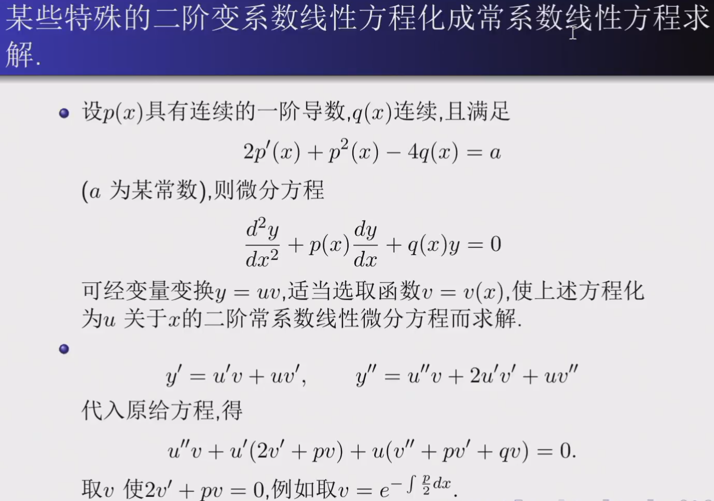
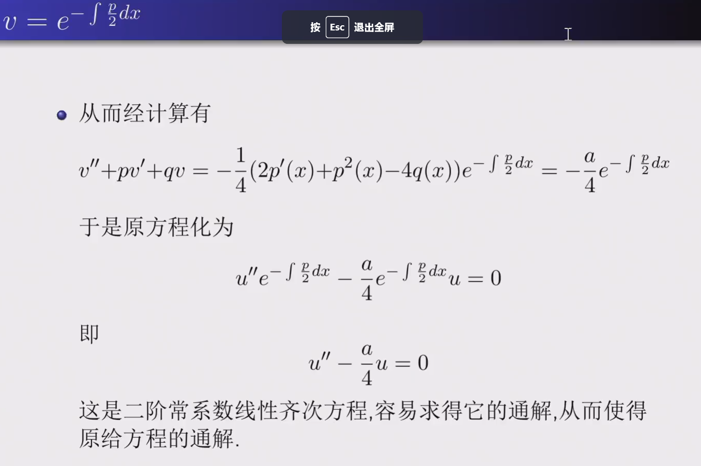
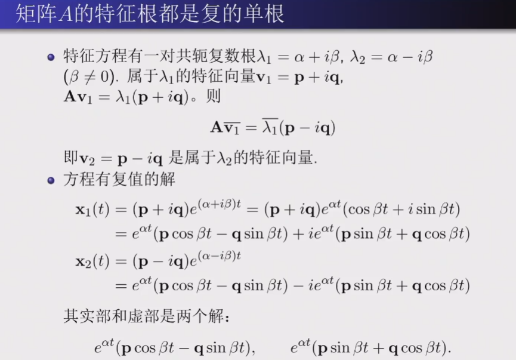
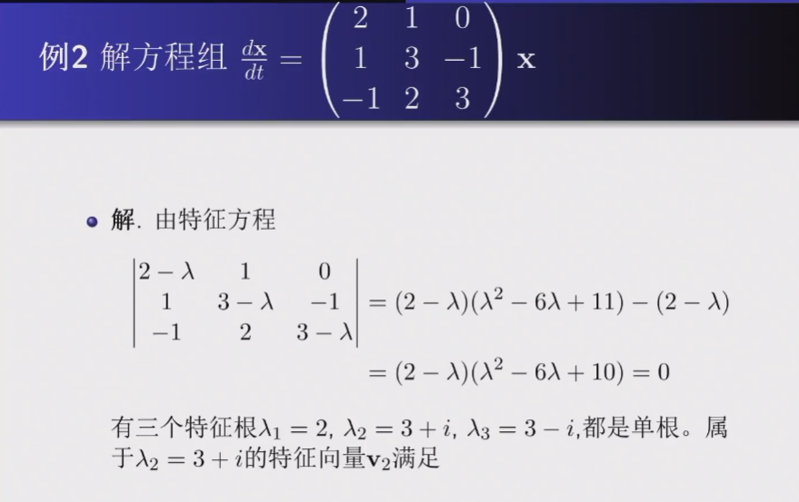
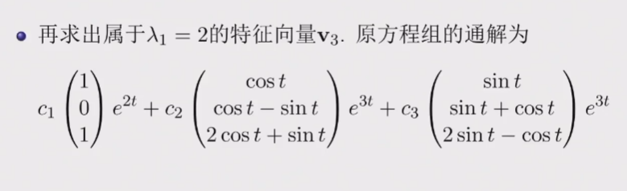
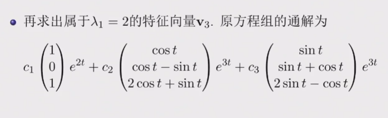

常微分方程¶
约 4917 个字 11 张图片 预计阅读时间 14 分钟
任课教师：王伟
这课讲的很浅，好像难度也不大
疑似小测后开始上强度了（
UsefulLinks
成绩组成
- 平时成绩：50%，包括作业30%和小测20%
- 期末考试：50%
基本概念¶
含有未知数、所求的未知函数、未知函数的导数的方程，称为微分方程。
最高阶导数的阶数称为微分方程的阶数。
n阶微分方程的一般形式：\(F(x, y, y', y'', \cdots, y^{(n)}) = 0\)
- 其中\(y^{(n)}\)必须出现，其他变量不要求。如 \(y^{(n)} = 1\)
使微分方程成为恒等式的\(y = y(x)\)称为微分方程的解，这就是定义中的“未知函数”。
若解中含有任意常数且常数的个数与方程阶数相等，则称为微分方程的通解，不含有常数则为特解。
为了求解方程的特解，需要提供一些初始条件，如\(y(x_0) = y_0, y'(x_0) = y_0'\)等。
一阶ode¶
一般形式：\(f(x, y) = \frac{dy}{dx}\)
可分离变量的ode解法¶
即可化为\(\frac{dy}{dx} = \varphi (x)\psi (y)\)的形式。
解法：分离变量，两边积分。
例
- 求解\(\frac{dy}{dx} = 2xy\)
- 分离变量，得\(\frac{dy}{y} = 2xdx\)
- 两边积分，得\(\ln |y| = x^2 + C\)
- 代回\(x\),\(y\),得\(y = Ce^{x^2}\)
- 求解略复杂的可分离形式的ode:\(\frac{dy}{dx} = \sin ^2 (x-y+1)\)
- (想办法取出sin中的东西)令\(u=x-y+1\),则\(\frac{du}{dx} = 1-\frac{dy}{dx}\)
- 代入原式，得\(\frac{du}{dx} = 1 - \sin ^2 u = \cos ^2 u\)
- 分离变量，得\(\frac{du}{\cos ^2 u} = dx\)
- 两边积分，得\(\tan u = x + C\)
- 代回\(x\),\(y\),得\(\tan (x-y+1) = x + C\)
未知量齐次ode解法¶
即可由一般形式化为\(\frac{dy}{dx} = \varphi (\frac{y}{x})\)的形式。 只要注意到等号两侧\(y\)与\(x\)的次数相同，就可以尝试变形后用\(u = \frac{y}{x}或\frac{x}{y}\)的形式进行变换。
解法：令\(y = ux\),则\(\frac{dy}{dx} = u + x\frac{du}{dx}\)，再代入原方程。
例
- 求解齐次ode:\((y^2-2xy)dx+x^{2}dy=0\)（注意\(x\),\(y\)的次数相同）
- 先变形，得\(\frac{dy}{dx} = 2\frac{y}{x} - (\frac{y}{x})^2\)
- 令\(u = \frac{y}{x}\),则\(y = ux\),\(\frac{dy}{dx} = u + x\frac{du}{dx}\)
- 代入原方程，得\(u + x\frac{du}{dx} = 2u - u^2\)
- 分离变量，得\(\frac{du}{u(1-u)} = \frac{dx}{x}\)
- 两边积分，得\(\ln |u| - \ln |1-u| = \ln |x| + C\)
一阶线性ode解法¶
一般形式：\(\frac{dy}{dx} + P(x)y = Q(x)\)
当\(Q(x) = 0\)时，称为齐次线性方程；否则称为非齐次线性方程。
解法：类似于线性代数中（非）齐次线性方程组的解法
- Step 1: 求齐次线性方程的通解（分离变量）
- \(\frac{dy}{dx} + P(x)y = 0\)
- \(\Rightarrow \frac{dy}{y} = -P(x)dx\)
- \(\Rightarrow \ln |y| = -\int P(x)dx + C\)
- \(\Rightarrow y = Ce^{-\int P(x)dx}\)
- Step 2: 常数变易法求非齐次线性方程的通解
- \(C\)为常数时，\(y = Ce^{-\int P(x)dx}\)是齐次线性方程的通解
- \(C = u(x)\)时，假设\(y = u(x)e^{-\int P(x)dx}\)是非齐次线性方程的通解
- 代入\(\frac{dy}{dx} + P(x)y = Q(x)\)
- 得\(u'(x)e^{-\int P(x)dx} = Q(x)\)
- 由此得\(u(x) = \int Q(x)e^{\int P(x)dx}dx + C\)
- 因此非齐次线性方程的通解为\(y = e^{-\int P(x)dx}(\int Q(x)e^{\int P(x)dx}dx + C)\)
例
- 求解非齐次线性ode:\(\frac{dy}{dx} = \frac{1}{x+y}\)
- 解法1: 取倒数化为非齐次一般形式
- \(\frac{dx}{dy} = x+y\)
- 将\(x\)看作因变量: \(\frac{dx}{dy} - x = y\)
- 代入公式，于是\(P(y) = -1\), \(Q(y) = y\)
- 得\(x = e^{y}(\int y e^{-\int dy}dy + C)\)
- 积分化简得\(x = Ce^{y} - y - 1\)
- 解法2: 也可以用未知量齐次的换元+分离方法
- 令\(u = x+y\),则\(\frac{dy}{dx} = \frac{du}{dx} - 1\)
- 代回方程得\(\frac{du}{dx} - 1 = \frac{1}{u}\)
- 分离变量得\(\frac{du}{1+\frac{1}{u}} = dx\)
- 两边积分得\(u - ln|u+1| = x + C\)
- 代回\(u = x+y\),得\(y - ln|x+y+1| + C = 0\)
- 解法1: 取倒数化为非齐次一般形式
伯努利方程¶
形式：\(\frac{dy}{dx} + P(x)y = Q(x)y^n\)
解法: 两边同时除以\(y^n\)，既得\(\frac{1}{y^n}\frac{dy}{dx} + P(x)y^{1-n} = Q(x)\)，
观察到第一项恰好等于\(\frac{d(y^{1-n})}{(1-n)dx}\)，
于是令\(z = y^{1-n}\)，则\(\frac{dz}{dx} + (1-n)P(x)z = (1-n)Q(x)\)
这就化为了一阶线性ode，套用公式解出\(z\)，再代回\(y\)即可。
例
- 求解伯努利方程:\(\frac{dy}{dx} + \frac{y}{x} = a(\ln x)y^2\)
- 令\(z = y^{1-2} = y^{-1}\),则\(\frac{dz}{dx} - \frac{z}{x} = -a\ln x\)
- 于是\(P(x) = -\frac{1}{x}\), \(Q(x) = -a\ln x\)
- 代入公式得\(z = e^{\int \frac{1}{x}dx}(-\int a\ln x e^{-\int \frac{1}{x}dx}dx + C)\)
- 积分化简后得到\(z = -\frac{1}{2} ax(\ln x)^2 + Cx\)
- 代回,得\(y = \frac{1}{-\frac{1}{2} ax(\ln x)^2 + Cx}\)
全微分方程¶
（我没看懂，很多都是多元函数和偏导的东西，可能会在数分上讲到）
将微分方程化为\(M(x,y)dx + N(x,y)dy = 0\)的形式，若\(\exists u(x,y)\)使得\(du(x,y) = M(x,y)dx + N(x,y)dy\)，则称为全微分方程。
则\(u(x,y) = C\)即为微分方程的通解。
例如 \(xdx+ydy = 0\)，等号左侧为 \(d(\frac{1}{2}x^2 + \frac{1}{2}y^2)\)，因此\(\frac{1}{2}x^2 + \frac{1}{2}y^2 = C\) 即为通解。
\(M(x,y)dx + N(x,y)dy = 0\)是全微分方程 \(\leftrightarrow \frac{\partial M(x,y)}{\partial y} = \frac{\partial N(x,y)}{\partial x}\)
(dx的系数对y求导 = dy的系数对x求导)
而\(u(x,y) = \int_{(0,0)}^{(x,y)} M(x,y)dx + N(x,y)dy\)即为微分方程的特解。
- 解法1：
- 求解\(u(x,y)\): 从\((0,0)\)先积分到\((x,0)\), 再从\((x,0)\)积分到\((x,y)\)
- (路径积分)
- 解法2:
- 凑全微分（技巧性较强）
凑全微分
我估计不久后会搬到数分Ⅱ笔记里

例
- 求解\((3x^{2}+6xy^{2})dx + (6x^{2}y+4y^{3})dy = 0\)
- 解法1: 直接求解
- 此处\(M = 3x^{2}+6xy^{2}\), \(N = 6x^{2}y+4y^{3}\)
- 而\(\frac{\partial M}{\partial y} = 12xy = \frac{\partial N}{\partial x}\), 因此为全微分方程
- \(u(x,y) = \int_{(0,0)}^{(x,y)} (3x^{2}+6xy^{2})dx + (6x^{2}y+4y^{3})dy\)
- \(= \int_{0}^{x} 3t^{2}dt + \int_{0}^{y} (6x^{2}s+4s^{3})ds\)
- \(= x^{3} + 3x^{2}y^{2} + y^{4}\)
- 通解就是\(u(x,y) = C\), 即\(x^{3} + 3x^{2}y^{2} + y^{4} = C\)
- 解法2: 凑全微分
- 改写方程为\(3x^{2}dx + 4y^{3}dy + 6xy(ydx + xdy) = 0\)
- 凑微分得\(d(x^{3} + y^{4}) + 6xyd(xy) = 0\)
- 也就是\(d(x^{3} + y^{4} + 3x^{2}y^{2}) = 0\)
- 得通解\(x^{3} + y^{4} + 3x^{2}y^{2} = C\)
- 解法1: 直接求解
- 求解\((\cos x + \frac{1}{y})dx + (\frac{1}{y} - \frac{x}{y^{2}})dy = 0\)
- 分离一下，得\(\cos x dx + \frac{1}{y}dy + \frac{ydx-xdy}{y^{2}} = 0\)
- 凑微分得\(d(\sin x + \ln |y| - \frac{x}{y}) = 0\)
- 得通解\(\sin x + \ln |y| - \frac{x}{y} = C\)
- 解法3: 积分因子
- 若微分方程不是全微分方程，可以乘以一个函数\(\mu(x,y)\)，使得\(\mu(x,y)M(x,y)dx + \mu(x,y)N(x,y)dy = 0\)是全微分方程
- 之后在按照解全微分方程的方法来解
- 若\(M(x,y)dx + N(x,y)dy = 0\)满足\(\frac{1}{N} (\frac{\partial M}{\partial y} - \frac{\partial N}{\partial x}) = f(x)\)(只和x有关)
- 则积分因子\(\mu(x) = e^{\int f(x)dx}\)
- 若\(M(x,y)dx + N(x,y)dy = 0\)满足\(\frac{1}{M} (\frac{\partial N}{\partial x} - \frac{\partial M}{\partial y}) = g(y)\)
- 则积分因子\(\mu(y) = e^{\int g(y)dy}\)
例
- 求解\(ydx+(x+x^2 y^2 )dy = 0\)
- 改写为\(ydx+xdy+x^2 y^2 dy = 0\)
- 两边同乘\(\mu(x,y) = (xy)^{-2}\)（我不到怎么发现的）
- 得\(\frac{d(xy)}{(xy)^2} + dy = 0\)
- \(\rightarrow d(-\frac{1}{xy} + y) = 0\)
高阶ode¶
可降阶的二阶ode¶
- \(y^n = f(x)\)
- 解法：直接积分n次
- 较为简单，注意每次积分都要加上常数
- \(y'' = f(x,y')\) (无\(y\))
- 解法：令\(y' = p\), 则\(y'' = p'\), 于是原方程化为一阶方程\(p' = f(x,p)\)
- 注意这里的p仍然是x的函数，即\(p' = \frac{dp}{dx}\)
例
- 求解\((1+x^2)y'' = 2xy'\)
- 令\(y' = p\), 则\(y'' = p'\), 于是原方程化为一阶方程\(p' = \frac{2xp}{1+x^2}\)
- 分离变量得\(\frac{dp}{p} = \frac{2xdx}{1+x^2}\)
- 两边积分得\(\ln |p| = \ln |1+x^2| + C\)
- 代回得\(p = C(1+x^2)\)
- 再对x积分一次得\(y = C_1(x+\frac{1}{3} x^3) + C_2\)
- \(y'' = f(y,y')\) (无\(x\))
- 解法：令\(y' = p\), 则\(y'' = \frac{dp}{dx} = \frac{dp}{dy} \frac{dy}{dx} = p\frac{dp}{dy}\), 于是原方程化为一阶方程\(p\frac{dp}{dy} = f(y,p)\)
- 这里将p看作y的函数，也即自变量是y，因变量是p
例
- 求解\(yy'' - (y')^2 = 0\)
- 令\(y' = p\), 则\(y'' = p \frac{dp}{dy}\)
- 原方程化为\(yp \frac{dp}{dy} - p^2 = 0\)
- 分离变量得\(\frac{dp}{p} = \frac{dy}{y}\)
- 两边积分得\(\ln |p| = \ln |y| + C\)
- 代回得\(p = y' = \frac{dy}{dx} = C_1 y\)
- 注意这个是关于\(y\)和\(x\)的ode，分离变量得\(\frac{dy}{y} = C_1 dx\)
- 积分化简得到\(y=C_2 e^{C_1 x}\)
二阶线性ode¶
定义函数的线性相关性：
若存在不全为零的常数\(k_1,k_2,\cdots,k_n\)使得\(k_1y_1(x) + k_2y_2(x) + \cdots + k_ny_n(x) = 0\)，则称\(y_1,y_2,\cdots,y_n\)线性相关。
n = 2时，若\(\frac{y_2(x)}{y_1(x)}\)是常数，则线性相关。
一般形式：\(y'' + P(x)y' + Q(x)y = f(x)\)（\(f(x)=0\)时为齐次，否则为非齐次）
有如下性质：
- 若\(y_1(x),y_2(x)\)是齐次方程的两个解，则\(C_1y_1(x) + C_2y_2(x)\)也是齐次方程的解
- 若\(y_1(x),y_2(x)\)是齐次方程的两个特解，且线性无关，则齐次方程的通解为\(y = C_1y_1(x) + C_2y_2(x)\)
- 推论：n阶齐次线性ode的n个特解的线性组合是通解
例
\(y'' + y = 0\)的特解为\(y_1 = \sin x, y_2 = \cos x\)
则\(y = C_1\sin x + C_2\cos x\)是通解
- 若\(y^* (x)\)是（非齐次）\(y'' + P(x)y' + Q(x)y = f(x)\)的一个特解，\(Y(x)\)是（对应的齐次方程）\(y'' + P(x)y' + Q(x)y = 0\)的通解，则\(y = Y(x) + y^* (x)\)是非齐次方程的通解
例
\(y''+y=x\)特解为\(y^* = x\), 而\(Y = C_1\sin x + C_2\cos x\)
则\(y = C_1\sin x + C_2\cos x + x\)是通解
- (叠加原理) \(y_1^{*}\)和\(y_2^{*}\)是\(y'' + P(x)y' + Q(x)y = f_1(x)\)和\(y'' + P(x)y' + Q(x)y = f_2(x)\)的特解，则\(y_1^{*} + y_2^{*}\)是\(y'' + P(x)y' + Q(x)y = f_1(x) + f_2(x)\)的特解
常系数齐次解法¶
一般形式：\(y'' + py' + qy = 0\)(p,q为常数)
注意到这表示\(y,y',y''\)的线性组合为0，考虑指数函数\(y = e^{rx}\)，代入方程得\(r^2 + pr + q = 0\)，即对应的特征方程，只需取满足该方程的r.
- \(p^2 - 4q>0\) 时，有两根\(r_1 \neq r_2\)
- 则两特解\(y_1 = e^{r_1 x}, y_2 = e^{r_2 x}\)
- 通解为\(y = C_1 e^{r_1 x} + C_2 e^{r_2 x}\)
- \(p^2 - 4q = 0\) 时，有两根\(r_1 = r_2 = r\)
- 通解为\(y = (C_1 + C_2 x) e^{r x}\)
- \(p^2 - 4q < 0\) 时，有两复根\(r_{1,2} = \alpha \pm i\beta\)
- 通解为\(y = e^{\alpha x}(C_1 \cos \beta x + C_2 \sin \beta x)\)
- 推论：\(y^{(n)} + p_1 y^{(n-1)} + \cdots + p_n y = 0\)的特征方程为\(r^n + p_1 r^{n-1} + \cdots + p_n = 0\)
- 在复数范围内有n个根，把下面的几个对应通解加起来
- \(k\)重实根\(r\)对应\(e^{rx} (C_0 + C_1 x + \cdots + C_{k-1} x^{k-1})\)
- \(k\)对虚根\(\alpha \pm \beta i\)对应\([(a_0 + a_1 x + \cdots + a_{k-1} x^{k-1})\cos \beta x + (b_0 + b_1 x + \cdots + b_{k-1} x^{k-1})\sin \beta x]e^{\alpha x}\)
- 上述\(a_i, b_i, C_i\)为任意常数
例
- 求解\(y'' - 2y' - 3y = 0\)
- 特征方程为\(r^2 - 2r - 3 = 0\), 解得\(r_1 = 3, r_2 = -1\)
- 通解为\(y = C_1 e^{3x} + C_2 e^{-x}\)
- 求解\(y'' - 4y' + 4y = 0\)
- 特征方程为\(r^2 - 4r + 4 = 0\), 解得\(r = 2\)
- 通解为\(y = (C_1 + C_2 x) e^{2x}\)
- 求解\(y^{(4)} - 2y''' + 5y'' = 0\)
- 特征方程为\(r^4 - 2r^3 + 5r^2 = 0\), 解得\(r = 0, 0, 1 \pm 2i\)
- 通解为\(y = C_1 + C_2 x + e^x(C_3 \cos 2x + C_4 \sin 2x)\)
常系数非齐次解法¶
非齐次通解 = 齐次通解 + 非齐次特解
一般形式：\(y'' + py' + qy = f(x)\), 特征方程依旧是\(r^2 + pr + q = 0\)
探讨如下两类\(f(x)\)
- \(f(x) = e^{\lambda x} P_m(x)\), \(P_m(x)\)是m次多项式
- \(\lambda\)不是特征根时，\(Q(x)\)为m次多项式，特解为\(y^* = e^{\lambda x} q_m(x)\)
- \(\lambda\)为特征方程的单根，\(Q(x)\)为\((m+1)\)次多项式，特解为\(y^* = xe^{\lambda x} q_m(x)\)
- \(\lambda\)为特征方程的重根，\(Q(x)\)为\((m+2)\)次多项式，特解为\(y^* = x^2 e^{\lambda x} q_m(x)\)
例
- 求\(y'' + 4y' +3y = x\)的一个特解
- 特征方程为\(r^2 + 4r + 3 = 0\), 解得\(r_1 = -1, r_2 = -3\)
- 此时\(f(x) = x = xe^{0x}\), 即\(P_m(x) = x, \lambda = 0\)
- \(\lambda\)不是特征根，\(Q(x)\)为一次多项式（与\(P_m(x)\)次数一样），设\(y^* = b_0 x + b_1\)
- 代入方程得\(4b_0 + 3b_0 x + 3b_1 = x\), 比较系数有\(b_0 = \frac{1}{3}, b_1 = -\frac{4}{9}\)
- 因此特解为\(y^* = \frac{1}{3} x - \frac{4}{9}\)
- 求解\(y'' -4y' +4y = (6x-2)e^{2x}\)
- 特征方程为\(r^2 - 4r + 4 = 0\), 解得\(r = 2\)
- 于是齐次方程通解为\(Y = (C_1 + C_2 x) e^{2x}\)
- 此时\(f(x) = (6x-2)e^{2x}\), \(P_m(x) = 6x-2, \lambda = 2\)
- \(\lambda\)是二重根，\(Q(x)\)次数比\(f(x)\)高两次，设特解为\(y^* = x^2 (b_0 + b_1 x)e^{2x}\)
- 代入原方程化简得\(6b_0 x + 2b_1 = 6x-2\), 比较系数得\(b_0 = 1, b_1 = -1\)
- 特解为\(y^* = x^2 (x - 1)e^{2x}\)
- 于是通解为\(y = （C_1 + C_2 x）e^{2x} + x^2 (x - 1)e^{2x}\)
- \(f(x) = e^{\lambda x}[P_l (x) \cos \omega x + P_n (x) \sin \omega x]\)
- 设特解为\(y^* = x^k e^{\lambda x}[Q_m (x) \cos \omega x + R_m (x) \sin \omega x]\)(推导过程略)
- 其中\(m = \max(l,n)\)
- 若\(\lambda \pm i\omega\)不是特征根, 则\(k = 0\)
- 若\(\lambda \pm i\omega\)是(一对)特征根, 则\(k = 1\)
例
- 求\(y'' - y = 10e^{2x} \cos x\)的一个特解
- 则\(P_l (x) = 10, P_n (x) = 0, \lambda = 2, \omega = 1, m = \max(l,n) = 0\)
- 且\(\lambda \pm i\omega = 2 \pm i\)显然不是特征根，因此\(k = 0\)
- 设特解为\(y^* = e^{2x} (a \ cos x + b \ sin x)\)
- 代入原方程化简得\((2a+4b) \ cos x + (2b-4a) \ sin x = 10 \ cos x\), 比较系数得\(a = 1, b = 2\)
- 特解为\(y^* = e^{2x} (cos x + 2 sin x)\)
- 求\(y'' + y = x \cos 2x\)的一个特解
- 则\(P_l (x) = x, P_n (x) = 0, \lambda = 0, \omega = 2, m = \max(l,n) = 1\)
- 且\(\lambda \pm i\omega = \pm 2i\)显然不是特征根，因此\(k = 0\)
- 设特解为\(y^* = (ax + b)\cos 2x + (cx + d)\sin 2x\)
- 代入原方程化简得\((-3ax-3b+4c) \cos 2x + (-3cx-3d-4a) \sin 2x = x \cos 2x\), 比较系数得\(a = -\frac{1}{3}, b = c = 0, d = \frac{4}{9}\)
- 则特解为\(y^* = -\frac{1}{3} x \cos 2x + \frac{4}{9} \sin 2x\)
Euler方程¶
形式：\(x^n y^{(n)} + p_1 x^{n-1} y^{(n-1)} + \cdots + p_{n-1} x y' + p_n y = f(x)\)
解法：令\(x = e^t\)，\(D=\frac{d}{dt}\)，可得\(x^k y^{(k)} = D(D-1)\cdots(D-k+1)y\), 代入原方程化为常系数线性ode
例
- 求解\(x^2 y'' - 2xy' + 2y = \ln^2 x -2\ln x\)
- 令\(x = e^t\), 方程化为\(D(D-1)y-2Dy+2y = t^2 - 2t\)
- 即\(D^2 y - 3Dy + 2y = t^2 - 2t\)
- 即\(\frac{d^2y}{dt^2} - 3\frac{dy}{dt} + 2y = t^2 - 2t\)
- 特征方程为\(r^2 - 3r + 2 = 0\), 解得\(r = 1, 2\)
- 齐次方程通解为\(y = C_1 e^t + C_2 e^{2t}\)
- \(\lambda = 0\)不是特征根，设特解为\(y^* = at^2 + bt + c\)
- 代入原方程对比系数得\(a = b =\frac{1}{2}\),\(c = \frac{1}{4}\)
- 特解为\(y^* = \frac{1}{2} t^2 + \frac{1}{2} t + \frac{1}{4}\)
- 原方程通解为\(y = C_1 e^t + C_2 e^{2t} + \frac{1}{2} t^2 + \frac{1}{2} t + \frac{1}{4}\)
- 代回\(t = \ln x\)得\(y = C_1 x + C_2 x^2 + \frac{1}{2} (\ln x)^2 + \frac{1}{2} \ln x + \frac{1}{4}\)
- 求解\(y'' -\frac{y'}{x}+\frac{y}{x^2} = \frac{2}{x}\)
- 化为Euler方程\(x^2 y'' - xy' + y = 2x\)
- 令\(x = e^t\), 方程化为\((D^2 - 2D + 1)y = 2e^t\)
- 特征方程为\(r^2 - 2r + 1 = 0\), 解得\(r = 1\)
- 齐次方程通解为\(y = C_1 e^t + C_2 te^t\)
- \(\lambda = 1\)是二重特征根，设特解为\(y^* = At^2 e^t\)
常数变易法¶
- 已知齐次方程通解求非齐次方程通解
- 设\(Y = C_1 y_1 + C_2 y_2\)是\(y'' + py' + qy = 0\)的通解
- 令\(y = v_1 y_1 + v_2 y_2\)是\(y'' + py' + qy = f(x)\)的通解
- 有\(y' = v_1' y_1 + v_2' y_2 + v_1 y_1' + v_2 y_2'\), 令\(v_1' y_1 + v_2' y_2 = 0\)
- 于是\(y' = v_1 y_1' + v_2 y_2'\)
- 有\(y'' = v_1' y_1' + v_2' y_2' + v_1 y_1'' + v_2 y_2''\)
- 于是\(y'' + py' + qy = v_1' y_1' + v_2' y_2' + (y_1'' + py_1' + qy_1)v_1 + (y_2'' + py_2' + qy_2)v_2 = f(x)\)
- 由于\(y_1,y_2\)是通解，因此等号左边后两项为0，于是\(v_1' y_1' + v_2' y_2' = f(x)\)
- 得到方程组\(\begin{cases} v_1' y_1 + v_2' y_2 = 0 \\ v_1' y_1' + v_2' y_2' = f(x) \end{cases}\)
- Wronsky行列式\(W = \begin{vmatrix} y_1 & y_2 \\ y_1' & y_2' \end{vmatrix} = y_1 y_2' - y_2 y_1' \neq 0\)
- 由克莱姆法则解得\(v_1' = -\frac{y_2 f(x)}{W}, v_2' = \frac{y_1 f(x)}{W}\)
- 再积分就能得到\(v_1, v_2\)，从而得到\(y\)
例
- 已知\((x-1)y'' - xy' + y = 0\)的通解为\(y = C_1 x + C_2 e^x\)，求\((x-1)y'' - xy' + y =(x-1)^2\)的通解
- 待解方程化为\(y'' - \frac{xy'}{x-1} + \frac{y}{x-1} = x-1\)
- 设\(y = v_1 x + v_2 e^x\)是通解
- 得到方程组\(\begin{cases} v_1' x + v_2' e^x = 0 \\ v_1' + v_2' e^x = x-1 \end{cases}\)
- 解得\(v_1' = -1, v_2' = x e^{-x}\)
- 则\(v_1 = -x+C_1, v_2 = -e^{-x} (x+1)+C_2\)
- 于是通解\(y = (-x+C_1)x + (-e^{-x} (x+1)+C_2)e^x\)
- 已知齐次方程的一个特解求非齐次方程的通解
- 设\(y_1(x)\)是\(y'' + py' + qy = 0\)的一个非0特解
- 求\(y'' + py' + qy = f(x)\)的通解
- 设\(y = uy_1\)是通解
- 有\(y' = u'y_1 + uy_1'\), \(y'' = u''y_1 + 2u'y_1' + uy_1''\)
- 代入原方程得\(u''y_1 + (2y_1' + py_1)u' + (y_1'' + py_1' + qy_1)u = f(x)\)
- 由于\(y_1\)为特解，等号左边最后一项为0，得到\(u'' + \frac{2y_1' + py_1}{y_1}u' = \frac{f(x)}{y_1}\)
- 这就化为了关于\(u'\)的一阶线性ode，解出\(u\)再乘上\(y_1\)即可
例
- 求\(x^2 y'' - (x+2)(xy' - y) = x^4\)的通解
- 齐次方程为\(x^2 y'' - (x+2)(xy' - y) = 0\)
- 观察知特解为\(y_1 = x\)
- 设\(y = ux\)是通解
- 则\(y' = u'x + u\), \(y'' = u''x + 2u'\)
- 代入原方程并化简得\(u'' - u' = x\)
- 令\(u' = p\), 则\(u'' = p'\)
- 即\(p' - p = x\)
- 代入公式解得\(p = C_1 e^x - x - 1\)
- 代回得\(u = -\frac{1}{2} x^2 - x + C_1 e^x + C_2\)
- \(y = ux = -\frac{1}{2} x^3 - x^2 + C_1 x e^x + C_2 x\)
一种特殊方程¶


例

常系数线性ode组¶
消元法¶
例
- 求解\(\begin{cases} \frac{dy}{dx} = 3y-2z ① \\ \frac{dz}{dx} = 2y-z ② \end{cases}\)
- 由②得\(y = \frac{1}{2}(\frac{dz}{dx} + z)\)
- 代入①消去y得\(\frac{1}{2} (\frac{d^2z}{dx^2} + \frac{dz}{dx}) = \frac{3}{2}(\frac{dz}{dx} + z) - 2z\)
- 化简得\(\frac{d^2z}{dx^2} - 2\frac{dz}{dx} + z = 0\)
- 特征方程为\(r^2 - 2r + 1 = 0\), 解得\(r = 1\)
- 通解为\(z = C_1 e^x + C_2 x e^x\)
- 代回②得\(y = \frac{1}{2}(\frac{dz}{dx} + z) = \frac{1}{2}C_2 e^x + C_1 e^x + C_2 x e^x\)
- 注意最后代入时只能代入②, 不能代入①，否则会引入新的不确定常数
特征根¶
一般形式：\(\frac{d\bold{x}}{dt} = A\bold{x}\), 其中\(\bold{x} = \begin{bmatrix} x_1 \\ x_2 \\ \vdots \\ x_n \end{bmatrix}\), \(A\)为\(n \times n\)矩阵
特征方程为\(|A - \lambda I| = 0\)，解得\(\lambda_1, \lambda_2, \cdots, \lambda_n\)
而\((A - \lambda_i I)\bold{x_i} = \bold{0}\), 解得\(\bold{x_1}, \bold{x_2}, \cdots, \bold{x_n}\)
则\(\bold{x} = C_1 \bold{x_1} e^{\lambda_1 t} + C_2 \bold{x_2} e^{\lambda_2 t} + \cdots + C_n \bold{x_n} e^{\lambda_n t}\)是通解
例


若特征根为复数
Euler公式：\(e^{i\theta} = \cos \theta + i \sin \theta\) 
例

 

定理¶
设\(\bold{x_1}(t), \bold{x_2}(t), \cdots, \bold{x_n}(t)\)是齐次线性方程组\(\frac{d\bold{x}}{dt} = A\bold{x}\)的解，则\(\bold{x}(t) = \sum_{i=1}^{n} C_i \bold{x_i}(t)\)是通解